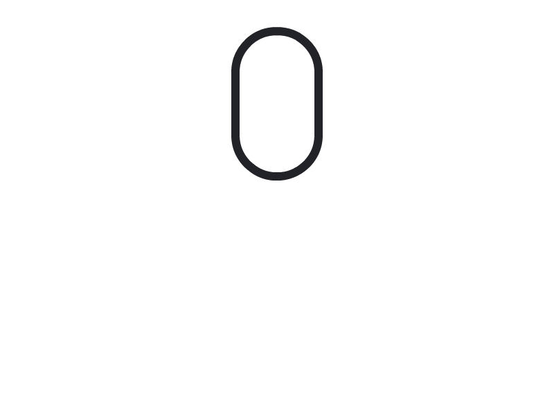

I came across on a fun riddle with interesting analogues in mathematics.
Here’s a comprehensive overview of the riddle, its solution, and the underlying logic.
Ten prisoners Ten hats
The prisoners are engaged in a game where winning secures their release and freedom.
There are ten prisoners and ten different colored hats. Each prisoner is given a random hat, but they are not aware of its color. The prisoners are aware of all the possible colors options. The distribution of the colors is completely random, which means some may have the same colored hat and some colors may not be given (i.e., the hats are sampled with replacement from a pool of ten different colours). They then arrange themselves in a line, ensuring that each prisoner can see all the hats except their own.
Their ultimate objective is to correctly guess the color of their own hat. When the officer counts to ten, all prisoners must simultaneously shout out their hat color guesses. If at least one prisoner guesses correctly, everyone is set free.
Before the game begins, the prisoners are allowed to strategize and come up with a plan, but once the hats are distributed, they cannot communicate with each other in any manner.
How can they ensure their freedom?
Can you come up with a fool-proof strategy? Scroll down the see the gradual breakdown of the answer.

Winning probability
Let’s first consider a scenario where every prisoner guesses a color randomly. Since there are ten colors, the probability of a single prisoner guessing right is
The probability of at least one prisoner guessing right can be obtained by calculating the complementary event of no one guessing right \[
\begin{align}
\mathbb{P}(\text{at least one right})
&= 1 - \mathbb{P}(\text{all wrong}) \\
&= 1 - (\frac{9}{10}) ^ {10} \\
& \approx 65\%
\end{align}
\]
Not too shabby. But if your freedom depends on this figure, you’d certainly want to do better.
Joint probability
Let’s denote the event of \(i\):th prisoner guessing right as \(A_i\). It’s evident that every prisoner have an equal chance of \(10\%\) guessing the right color.
Intuitively, since each prisoner has a probability of 1/10 for guessing correctly and there are ten guesses, it is necessary for all the guesses to be mutually exclusive.
SOLUTION
The idea behind the winning strategy is to partition the decision space into ten distinct and non-overlapping alternatives. This approach ensures that one, and only one, prisoner will make the correct guess with certainty.
Here’s a solution that’s based on basic modular arithmetics. First, let’s give each colors a corresponding number:
\(c_1\)
\(c_2\)
\(c_3\)
\(c_4\)
\(c_5\)
\(c_6\)
\(c_7\)
\(c_8\)
\(c_9\)
\(c_{10}\)
🔴
🟢
🔵
🟠
🟣
⚪️
⚫️
🟡
🟤
⭕️
0
1
2
3
4
5
6
7
8
9
Now let’s assume that the prisoners have been given the following colors:
prisoner (\(i\))
\(1\)
\(2\)
\(3\)
\(4\)
\(5\)
\(6\)
\(7\)
\(8\)
\(9\)
\(10\)
hat
🔴
🟢
🔵
🟠
🟠
⚪️
⚫️
🟡
🟢
⚫️
value
0
1
2
3
3
5
6
7
1
6
1. Calculate the sum
Each prisoner \(i=1, 2, \ldots, 10\) calculates the sum of the other peoples’ hats.
\[
S_i = \sum_{j \neq i } c_j
\]
prisoner (\(i\))
\(1\)
\(2\)
\(3\)
\(4\)
\(5\)
\(6\)
\(7\)
\(8\)
\(9\)
\(10\)
\(S_i\)
34
33
32
31
31
29
28
27
33
28
2. Each of them calculates the remainder \(R_i\) modulo 10:
\[
S_i \equiv R_i \pmod {10}
\]
prisoner (\(i\))
\(1\)
\(2\)
\(3\)
\(4\)
\(5\)
\(6\)
\(7\)
\(8\)
\(9\)
\(10\)
\(S_i\)
34
33
32
31
31
29
28
27
33
28
\(R_i\)
4
3
2
1
1
9
8
7
3
8
3. Deriving the guess \(c_i\)
Now that the prerequisites are set up, it’s time for the prisoners to execute the strategy and calculate their own guesses \(c_i\). The sum of all values and its remainder, denoted as \(S_{truth}\) and \(R_{truth}\), are simply
The prisoners are unaware of the real sum \(S_{truth}\) and the real remainder \(R_{truth}\) as their own hats’ colors \(c_i\) are unknown to them. However, they are certain that the real remainder \(R_{truth}\) lies between zero and nine, regardless of the sum.
If each prisoner guesses a distinct remainder \(R_{truth}\), it is ensured that one, and only one, prisoner will always guess the correct remainder.
Let’s make the 1st prisoner guess \(R_{guess,1} = 0\), the 2nd guesses \(R_{guess, 2} = 1\) and so on. The i:th prisoner’s guess can be calculated by solving \(c_i\) from previous equation.
The prisoner number 5 guessed his own hat and everyone gets free. Hooray!
Further notes
The problem can be also rewritten as follows:
Consider an ordered list of \(n\) integers, denoted as \({x_1, x_2, \ldots, x_n}\), randomly sampled with replacement from the discrete interval \([0, n]\). The task is to construct an ordered array of \(n\) integers, represented as \({y_1, y_2, \ldots, y_n}\), where each \(y_i\) is an integer between \(0\) and \(9\) (inclusive). The objective is to find such an array in a way that guarantees the existence of at least one integer in the constructed array that matches both its value and its index with the corresponding integer in the original list.
Simulation of solution written in Python.
from random import choicesn =10# n random integers from [0, n-1]X = choices(range(n), k=n)Y = []# Generating the guessesfor i inrange(n):# All but the i:th digit others = X[:i] + X[i+1:]# Remainder from modulo n remainder =sum(others) % n# (guess + remainder) % n == i guess = (10- remainder + i) % n Y.append(guess)print(X)print(Y)